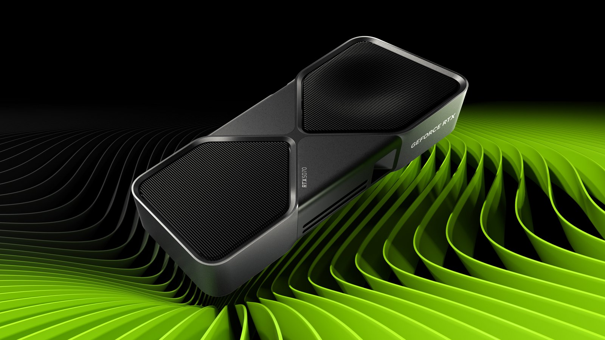

üî• HOT
15 Septembre 2025
NVIDIA RTX 5000 : Révolution Ray Tracing
Les nouvelles cartes graphiques RTX 5000 promettent des performances révolutionnaires avec le Ray Tracing de 4ème génération et DLSS 4.0.